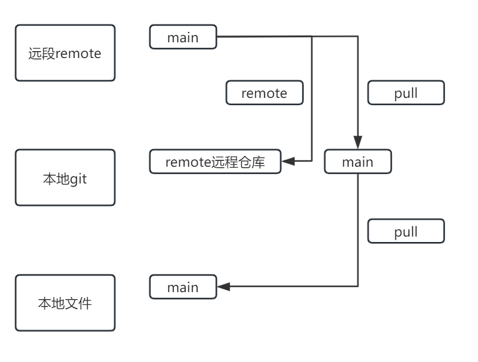

GitHub 使用如何正规化使用
GitHub 上的在线使用方法局限性
GitHub 是一个非常优秀的在线代码托管平台，但是它也有一些局限性，我们经常会在 GitHub 下载或者上传一些文件用来解决自己的问题，或者分享一些自己的代码，但是 GitHub 的在线使用方法有很多限制，比如：
它的功能太过简单，但是界面简单操作性高
功能上，GitHub 上的功能太过简单，但是它的界面操作性高，对于初学者来说，使用起来会有一定的难度。这点是好处也是坏处，好处在于初学者可以看到 GitHub 的基本上左右功能，比如我们经常使用的新建分支，合并文件，直接拷贝仓库，创建问题，创建 PR（之后会详细讲解），定制 Active 工作流，设置仓库的相关权限，这个极其重要 。
如果你选择在本地制作就不会看到这些可视化的操作。坏处在于初学者可能不知道如何使用这些功能，或者不知道如何操作，这会让初学者感到束手无策。如果在告诉你 GitHub 可以版本回溯，当看到满满当当的 commit 页面难免也会陷入无尽的苦恼，因此如果你想高效使用使用在本地文件夹中只需使用如下代码（前提是你已经安装了 Git，并在云端新建了仓库）：
eche "添加你想要添加的readme.md的内容" >> README.md
git init
git add README.md
git commit -m "first commit"
git remote add origin https://github.com/<你的用户名>/<你的仓库名>.git
# 往往这个仓库链接在你新建的时候就已经复制好了
git push -u origin main # 这一步的main其实在很早之前是master，现在已经改成main了
如此来完成仓库的链接准备在本地进行编辑操作。使用如下代码：
git status # 查看当前仓库状态
git add . # 添加所有修改的文件
git commit -m "commit message" # 提交修改
git push origin main # 推送到远程仓库
这是最标准的上传代码的方式，而且可以看到详细的提交记录，方便你追踪代码的修改。但是仅仅这样完全无法满足逐步学习的需求。因此我们需要了解一种更加规范的，更加严格的方式来使用 GitHub。
最大痛点文件上传大小限制
这点如果参加过大型项目的人员必定会有些许感触，因为 GitHub 上传文件大小限制为 100MB，对于大文件来说，上传会很麻烦，而且 GitHub 也没有提供分段上传的功能，这会让初学者很头疼。对此我也有此感触 unity 本来使用 SCM 即可但是往往有些重要的个人代码我们需要上传个人仓库，这些代码和内容必定动辄百十来兆，大的可能要 G 以单位，这样的话我们上传已经成为了一个问题。虽说你完全可以等待 git 本地的 push，但是这也会让你很不舒服。因为如果你不添加加速这个过程必定让你头疼不已。
无法舒爽的直接编辑文件
GitHub 的网页段其实还有一个很多编码者不太舒服的问题就是在线编辑文件，这太不方便了，因为你完全没有运行代码的环境，很多情况下你又没有方法测试！这个问题十分严重，再者说我们编写程序往往会使用专业的 IDE，这些 IDE 都有很强大的编辑功能。 在本地编辑势必比在网页端编辑要高效很多！
如何使用 GitHub 进行正规化的使用？
我们已经通过上述的使用我们已经了解了 GitHub 的使用过程的问题，那我们就需要对症下药，不过在此之前请默念三遍：
main 分支不是自己的
main 分支不是自己的
main 分支不是自己的
为什么这样说，我们慢慢解释。
理解概念 reomte，git，Local Working Directory
是不是有些不太明白这是什么？别急，我们慢慢来解释。
一、远程仓库（remote repository）：
概念：托管在远程服务器上的 Git 仓库（如 GitHub、GitLab、Gitee 等平台），用于多人协作时同步代码、共享版本历史。
作用： 作为代码的 “中央备份”，防止本地文件丢失。 实现多人协作：通过 git push 推送本地提交到远程，通过 git pull 拉取他人的远程提交到本地。
关联方式：本地仓库需要通过 git remote add <名字> <链接> 命令关联远程仓库（如 GitHub 仓库的 URL），后续即可通过远程名称（通常默认是 origin）操作。
二、本地 Git 仓库（Local Repository）
概念：隐藏在工作区文件夹下的 .git 目录（默认隐藏），是 Git 真正管理版本的核心，包含了所有提交历史、分支信息、配置等。
组成： 暂存区（Staging Area）：临时存放即将提交的变更（通过 git add 命令添加），相当于 “待提交缓冲区”。
本地分支：如 main 或 master 分支，存储着你的提交历史，通过 git commit 可将暂存区的变更提交到本地分支。 作用：即使不联网，也能在本地进行提交、创建分支、回溯版本等操作，这是 Git 分布式的核心优势
三、工作区（Working Directory）

概念：就是你在电脑本地磁盘上看到的项目文件夹，是你实际编写、修改代码的地方。
特点：这里的文件可能处于 “未跟踪”（未被 Git 管理）或 “已跟踪但被修改” 的状态，只有通过 git add 命令才能将变更提交到暂存区。
我要说明一点其实这三个概念并不是 Git 独有的，而是 Git 最基础的概念，其他的版本管理工具也有类似的概念。另外他们三个其实并不认识对方，是通过什么联系其各个部分呢？
四、关联（Link）
我们画图理解一下：

首先我们在 remote 上创建仓库以及分支 main，并在本地文件中打开本地 git 并且 init。
这时我们的本地文件就和本地 git 关联上了！下一步我们 remote 远程仓库。并且我们使用 pull 拉取远程仓库的 main 分支到本地。
这时我们本地就和远端的内容一样了，你可以进行修改直接上传也就是直接修改 main，这时 git 会记录你的改变，你通过 add 指令把改变添加到暂存区，然后 commit 提交到本地分支。并通过 push 指令上传到远程仓库。这时你就可以通过远程仓库看到你上传的 main 修改了。
但是还记得我开头说的吗？main 分支不是自己的！main 分支即其重要虽说这个仓库可能是你自己的当然 main 也是你自己的，可是如果你的组织中不止你一个人呢？难道所有人都在 main 上面更改吗，那岂不乱套了？所以我们需要创建自己的分支，并且在自己的分支上进行开发，这样才能保证自己的代码不会影响到其他人的代码。
这时我们创建了一个自己的分支该指令：
git checkout -b <分支名> #切换到新分支如果没有分支名则会创建新分支
git branch #查看当前分支
git branch -a #查看所有分支
git swithch <分支名> #切换到指定分支
这些代码都是我们查看分支的工具，我们可以创建自己的分支并且在自己的分支上进行开发，这样我们就不会影响到其他人的代码。好了你可以快乐的修改你的分支了，但是别忘了不只有你一个人努力哦，main 分支也会有人（这个人也可能是你自己）继续维护修改 main 的代码！我们修改完了代码后我们需要上传到远程仓库，这时我们需要使用 push 命令：
git push origin <分支名> #上传本地分支到远程仓库
芜湖~现在真的很累了你可以歇一歇了，已经把自己的改好了，你也上传了远程仓库，本地也和你现在的 self-1 同步了，good job！喝杯咖啡吧！
休息好了之后你要处理的就是现在要怎么把你的更改合并到 main 里面呢？不过在此之前你要知道两个人都在更改代码，一个人更改 main 为 main-1，你也通过努力把 slef-1 改好了，你需要把你的更改合并到 main-1 里面，小时候你也知道一个桥两个队施工肯定需要协商，我看看你更改了啥，你看看我更改了啥，你是不是把什么删了，我是不是又新增加了什么，这样的话合并是否还可以保证这个 main 分支的稳定呢？所以我们得确定一些使用如下指令：
git checkout main-1 #切换到main-1分支
git merge self-1 #合并self-1分支到main-1分支
git push origin main-1 #上传main-1分支到远程仓库
当然是可以的，但是往往你会收到当头一棒，告知你有冲突，这时你需要手动解决冲突，让你选择那个文件你想留下，哪个你需要用原来的，假如说我在 main 里新建 1 文件，self 分支新建 2 文件，删除了 1 文件里的部分代码，我 merge 之后会有一个冲突，你需要手动解决冲突，然后再 push 到远程仓库。
好玩吧？当然这样是可以的，但是更多的我们会这样：
git fetch origin #拉取远程仓库的最新代码
git merge origin/main #合并远程仓库的 main 分支到本地，这时本地git中的main也变成main-1咯~
git checkout self-1 #先确保你在self-1分支
git rebase origin/main #变基远程仓库的 main 分支到本地
但是无论如何两个分支只要有冲突，就需要手动解决冲突，这时你需要手动解决冲突，然后再 push 到远程仓库。当你解决冲突后，就可以把 self-2 分支上传啦！在远程仓库就可以看到你辛辛苦苦解决冲突后完成的 self-2 分支了！
在远端通过 pull request 你就可以把你的代码合并到 main 分支，这时你就可以看到你的代码被合并了！也就是 main-2 分支！nice！至此你已经完成了正规化的使用！大部分的正规场合都会使用这样的工作流进行开发。
总结
所说这是正规的使用方法，其目的就是为了让多个人能够同时办公，每个人处理自己的冲突，负责 main 分支的人员维护并修改，当其他人看到 main 分支中有自己力作能及得修改时，嘿嘿拷贝下来新建分支，优化修改，再 rebase main 分支看看还能不能在原来的基础上运行，自行修改，修改后提交上传，pr 给 main 分支的人员，他负责审查代码，并合并他们解决问题，每个人各司其职。
但是对于我们个人开发者有什么启发呢？首先还是那句话你要保证自己无论在何时都有一条退路 main，无论你在开发什么新功能都不要轻易的再 main 更改，先新建分支，通过其内容审查更新，再通过 PR 的方式与主线合并这样你既可以保存自己的修改过程，还可以记录你这次更新都更新了哪些内容？
那么各位愉快的使用 GitHub 吧！